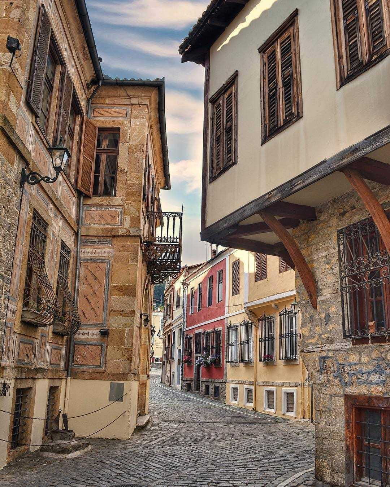
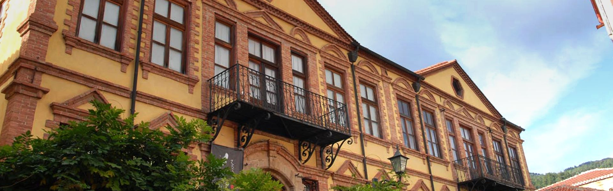
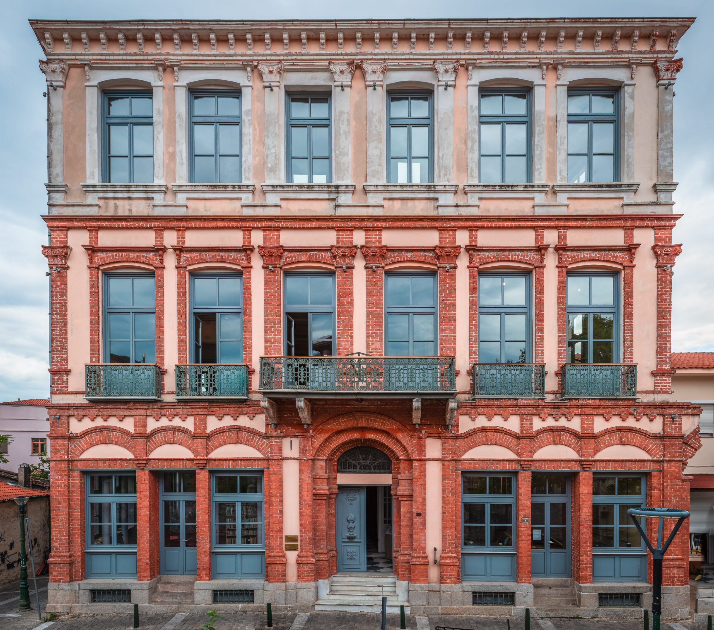
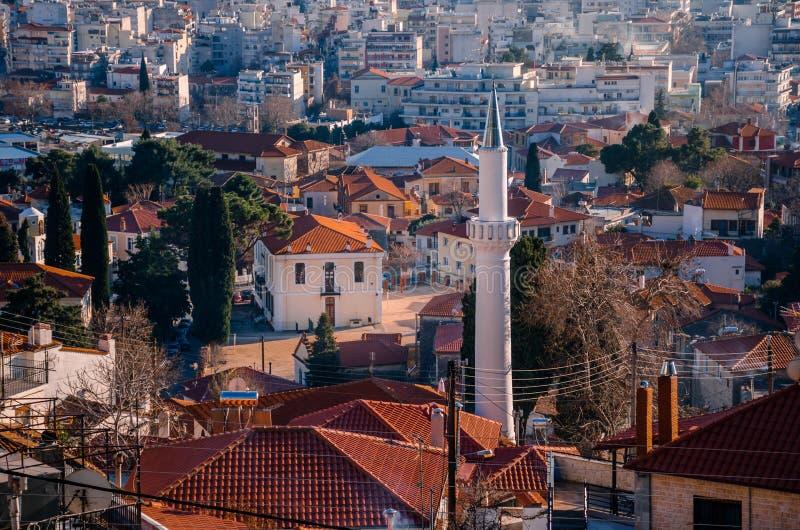
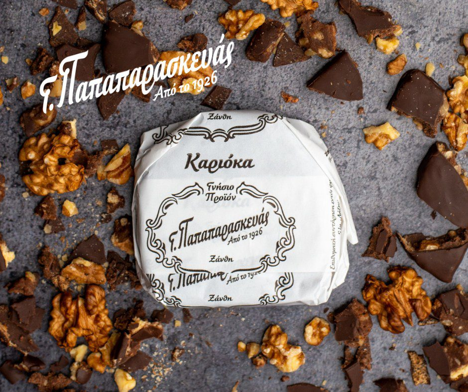
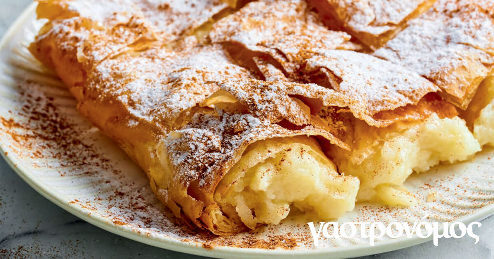
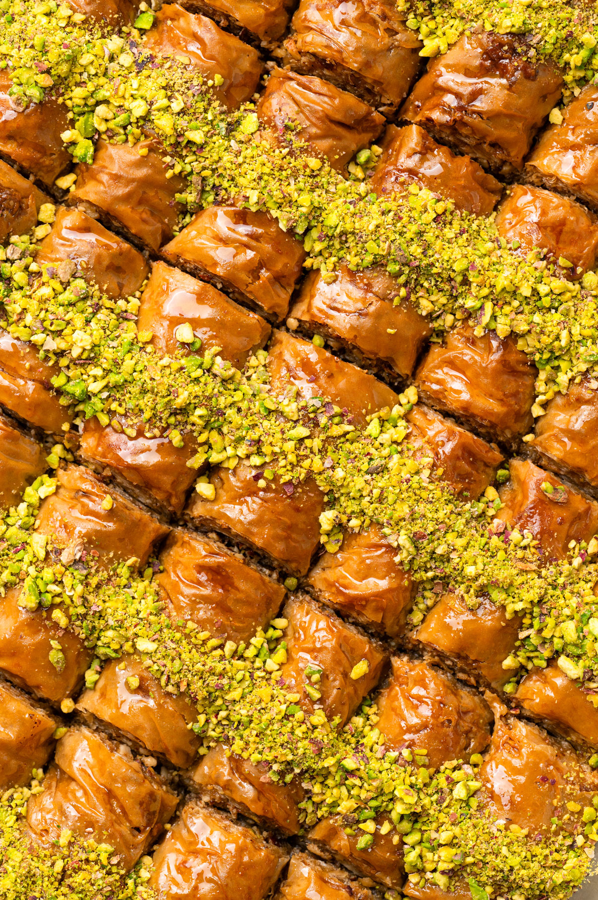
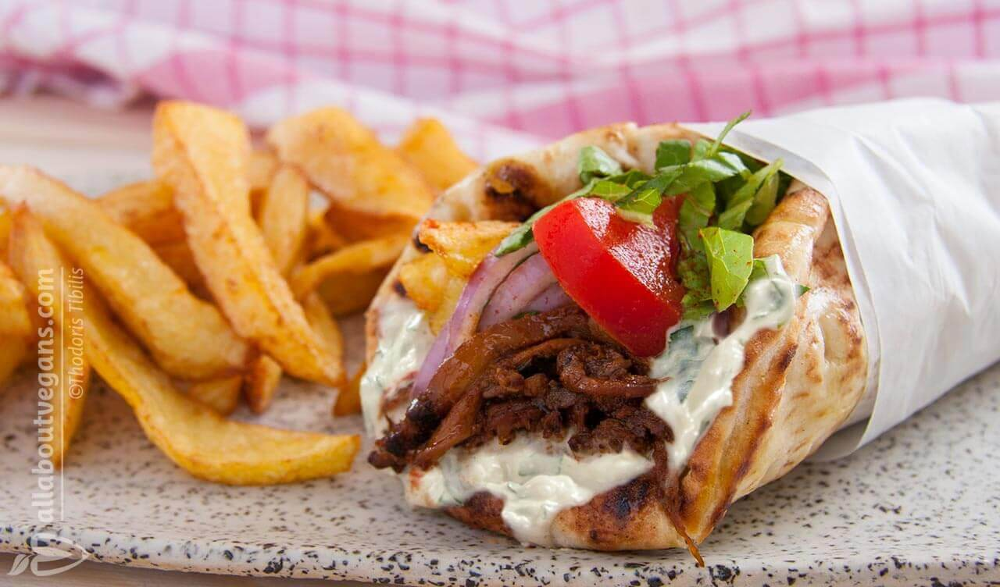
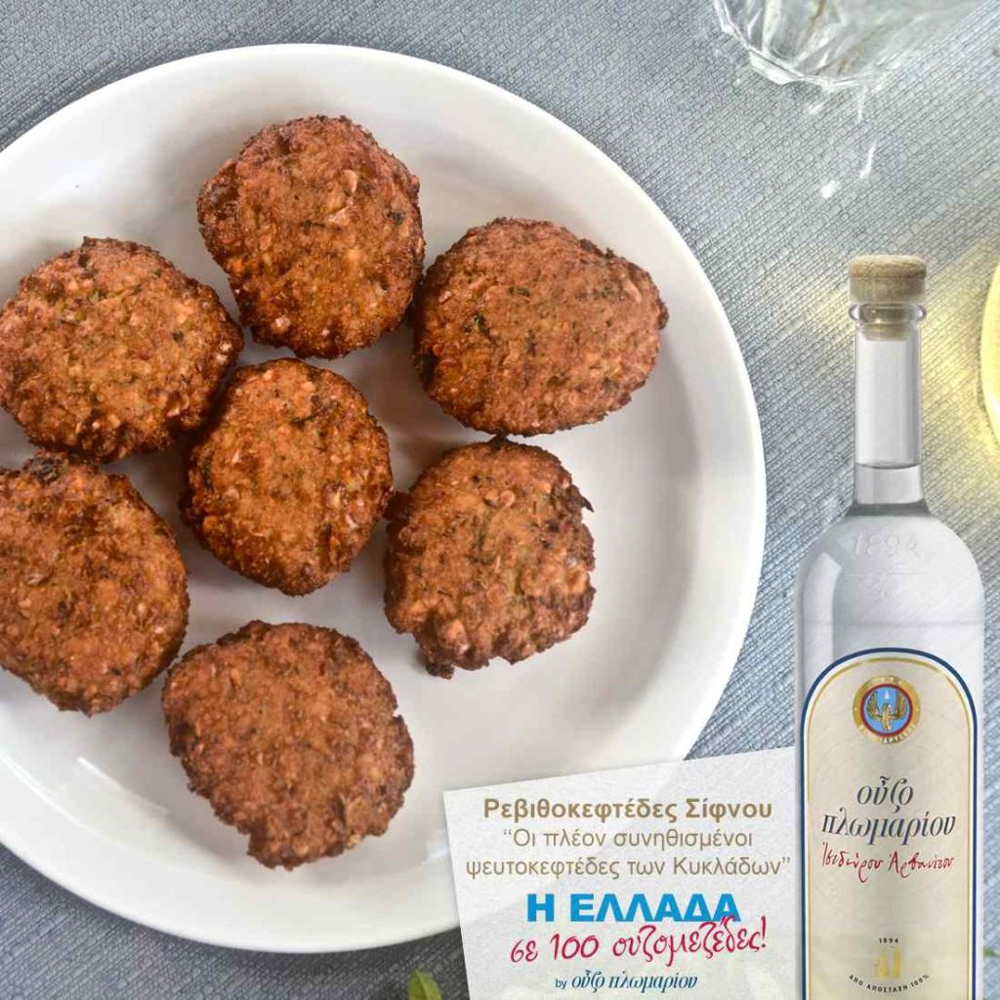

M.Ö. 8. Yüzyıl
Antik Abdera & Felsefe
İskeçe sahil şeridinde yer alan kadim Abdera (Avdira) kenti, atom teorisinin öncüsü Demokritos ve sofist düşünür Protagoras gibi filozofların anavatanıdır.
Άβδηρα & ΔημόκριτοςRodop Dağları'nın eteklerinde, Osmanlı zarafetiyle neoklasik Yunan mimarisinin harmanlandığı; arnavut kaldırımlı sokakları, dünyaca ünlü karnavalı ve buram buram tütün kokan tarihiyle yaşayan bir açık hava müzesi.
Nüfus
Osmanlı Mirası
Karnaval Geleneği
İstanbul'a Mesafe
Yunanistan'ın kuzeydoğusunda, kültürlerin ve geleneklerin asırlardır barış içinde iç içe geçtiği eşsiz bir coğrafya.
Yunanca adıyla Xanthi (Ξάνθη), Osmanlı dönemindeki adıyla İskeçe, Rodop Dağları'nın Kosynthos (Kosinithos) Nehri ile buluştuğu stratejik bir vadide konumlanmıştır.
Tarih boyunca Makedonya ve Trakya'yı birbirine bağlayan tarihi Via Egnatia ticaret yolunun kilit noktalarından biri olan İskeçe; Müslüman Türk azınlığın, Rumların, Pomakların ve Ermeni tüccarların zengin mirasını aynı sokaklarda barındırır.

1200'den fazla tescilli tarihi konak ve yapı.
Antik filozofların doğum yerinden tütün tüccarlarının görkemli malikanelerine uzanan asırlık hikaye.
İskeçe sahil şeridinde yer alan kadim Abdera (Avdira) kenti, atom teorisinin öncüsü Demokritos ve sofist düşünür Protagoras gibi filozofların anavatanıdır.
Άβδηρα & ΔημόκριτοςÇandarlı Kara Halil Hayreddin Paşa döneminde fethedilen şehir, Rumeli Beylerbeyliği'nin önemli bir kaza merkezi oldu. Saat Kulesi, bedestenler ve camiler bu dönemde inşa edildi.
Οθωμανική ΠερίοδοςŞehri yerle bir eden iki büyük sarsıntının ardından zengin tüccarlar, Epir ve Batı Makedonyalı taş ustalarını çağırarak şehri neoklasik ve geleneksel Osmanlı mimarisiyle yeniden kurdu.
Αναγέννηση της Παλιάς ΠόληςŞark tütünü olarak bilinen aromatik "Yenice Tütünü", Avusturya-Macaristan ve Fransa borsalarında rekor kırdı. "Kapnapothikes" (Tütün Depoları) semti bu altın çağda doğdu.
Η Εποχή του Καπνούİskeçe'nin Arnavut kaldırımlı sokaklarında zamanda yolculuğa çıkaran anıtlar ve doğa harikaları.

1859-1870 yıllarında Osmanlı idarecisi Hacı Emin Ağa tarafından yaptırılan kule, şehrin ana toplanma noktası olan Demokrasi Meydanı'nın (Platia Dimokratias) en görkemli simgesidir. Neoklasik pencereleri ve çanıyla zamana meydan okumaktadır.

Dar sokakları, cumbalı Osmanlı ahşap evleri ve zengin tüccarların gösterişli malikaneleriyle doludur. 1976 yılında koruma altına alınmış olup her köşesinde çiçekli avlular ve nostaljik kafeler bulunur.

Tütün tüccarı Kougioumtzoglou kardeşlerin 1860'larda inşa ettirdiği ikiz neoklasik konakta hizmet verir. İç mekanda altın varaklı tavan süslemeleri, geleneksel Trakya giysileri ve tütün işleme aletleri sergilenir.

İskeçe'ye 25 km uzaklıktaki lagün gölü. Suyun üzerinde ahşap köprülerle birbirine bağlanan Aziz Nikolaos (Agios Nikolaos) Kilisesi, yüzlerce kuş türü ve kış aylarında flamingolara ev sahipliği yapar.

Rodop Dağları'nı yararak Ege Denizi'ne dökülen nehrin oluşturduğu muhteşem vadi. Kayalara oyulmuş tarihi yürüyüş patikası, kano-rafting turları ve eski tren yolu ile doğaseverlerin vazgeçilmez rotasıdır.

19. yüzyıl sonlarında inşa edilen devasa 'K' ve 'Pi' planlı tuğla tütün hangarları ile Oscar ödüllü besteci Manos Hatzidakis'in doğduğu görkemli konak; kentin endüstriyel ve sanatsal kimliğinin tanığıdır.

İskeçe Müslüman Türk toplumunun ibadet merkezi olan tarihi camiler; klasik Osmanlı taş işçiliği, minareleri ve şadırvanlarıyla yüzyıllardır kentin hoşgörü iklimini yaşatmaya devam etmektedir.
Doğu Trakya, Anadolu göçmenleri ve Ege mutfağının harmanlandığı eşsiz lezzet durakları.

İskeçe'nin dünyaca ünlü hilal biçimli tatlısı Karioka, 1926 yılında Doğu Trakya'dan göç eden Giorgos Papaparaskevas tarafından geliştirilmiştir.
İnce bisküvi, taze kırılmış Rodop cevizleri, kakao ve özel tereyağı harmanlandıktan sonra yoğun bitter çikolata ile kaplanır. Bugün Yunanistan'ın dört bir yanından insanlar bu tatlıyı yerinde tatmak için İskeçe'ye akın eder.

İncecik çıtır çıtır açılmış yufka arasına ılık irmik kreması veya tuzlu peynir konularak üzerine pudra şekeri ve tarçın dökülen nefis sabah böreği.

Osmanlı ve Balkan tatlı geleneğinin devamı niteliğindeki bol cevizli şerbetli rulolar ve geleneksel sakızlı kurabiyeler.

Odun kömüründe pişirilen marine edilmiş etler, sıcacık pita ekmeği ve ev yapımı cacık (tzatziki) ile sunulan vazgeçilmez sokak lezzeti.

Fava, kızarmış saganaki peyniri, Porto Lagos balıkçı köyünden gelen taze kalamar ve deniz mahsulleri eşliğinde geleneksel sofra kültürü.
Bilgini test et, temel Yunanca kelimelerin sesli okunuşunu öğren ve seyahat rotanı hesapla.
5 soruda kentin tarihini, tatlarını ve festivallerini ne kadar iyi öğrendiğini keşfet!
Tebrikler!
İskeçe'de gezerken en çok işine yarayacak kelimeleri dinle ve öğren.
Çıkış yapacağınız şehri seçerek İskeçe'ye olan karayolu mesafesini ve tahmini süreyi anında öğrenin.
İpsala - Kipi Sınır Kapısı üzerinden kesintisiz Egnatia Odos (A2) otobanı rotası.
İskeçe seyahatinizi kusursuz kılacak pratik bilgiler ve bize ulaştırabileceğiniz gezi notlarınız.
Bordo pasaport için geçerli Schengen vizesi gereklidir. Yeşil (hususi) pasaport sahipleri vizesiz giriş yapabilir. İpsala Sınır Kapısı araçla 1.5 saat mesafededir.
Para birimi Euro (€)'dur. Kredi kartı restoran ve kafelerin %95'inde geçerlidir ancak tarihi pazarda nakit bulundurmak faydalıdır.
Resmi dil Yunancadır; ancak çarşıda, otellerde ve kafelerde Türkçe bilen esnaf ve azınlık halkı çok yaygındır, İngilizce de rahatlıkla konuşulur.
Geleneksel dükkanlar Salı, Perşembe ve Cumartesi öğleden sonra kapalı olabilir (14:30 - 17:30 arası siesta). Kafeler ve tavernalar ise gece yarılarına kadar canlıdır.
İskeçe gezisi hakkında merak ettiklerinizi veya site hakkındaki değerlendirmenizi formu doldurarak iletebilirsiniz.
Tarihi mekan açıklaması.